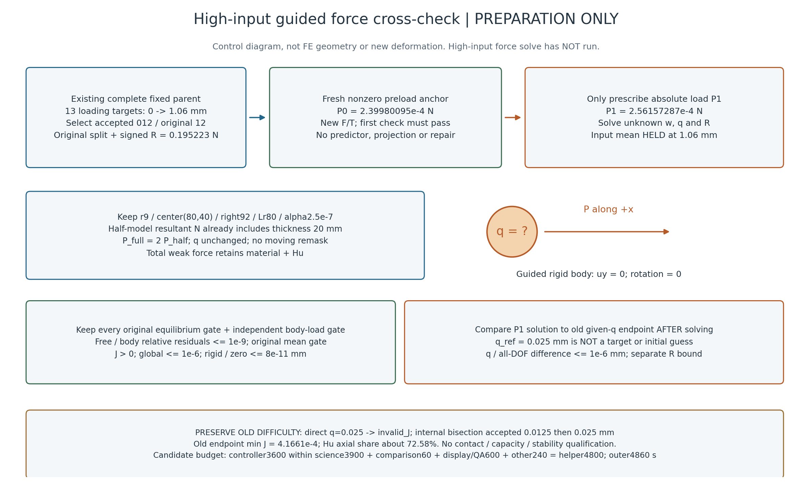

高输入1.06 mm力控交叉准备
2026-10-23 · L-CTIPFHIGHPREP1 · 准备完成／尚无新高输入force求解
保持机构平均输入1.06 mm，只给两个绝对外载P
从原完整固定父accepted12/original12的q0迁移split与signed R，P0必须fresh首检原样通过；P1独立求未知q，与原给q=.025参考交叉。其余物理／原门／57生产源码保持。
| 原请求 | 绝对半模型P / N，含t20 | 参考q / mm，仅事后对照 |
|---|
| P0非零预载 | 0.0002399800950672949 | 0 |
| P1 | 0.0002561572865437846 | 0.025 |
旧探针第一次直接+.025曾invalid_J，内部二分接受+.0125/+.025；末态minJ约4.166e−4、轴向Hu约72.58%。保留三接受态与失败历史，新N二分态不假配旧中间q态。此为导向总弱力任务，不授压力、纯接触容量或稳定性。
控制／来源示意，非有限元结果

一张新示意图已一次检查；没有重开旧动画或绘制新计算变形。未来成功后才按卡生成五图及全部实际N帧GIF。